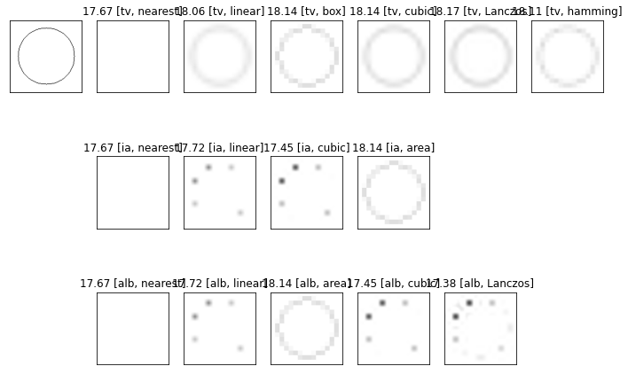
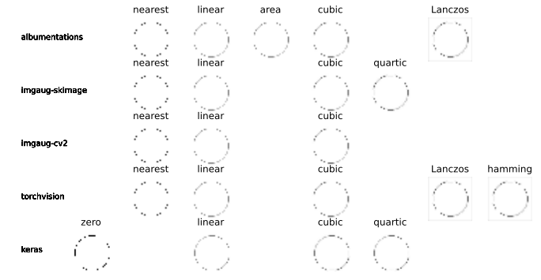

Discussion: Anti-aliasing Effect¶
According to the paper “On Buggy Resizing Libraries and Surprising Subtleties in FID Calculation” by @Richard Zhang, the selection of image resizing library and kernel matter to the Fréchet Inception (FID) score consistency because of the aliasing effect. (See: https://www.cs.cmu.edu/~clean-fid/)
Thus, we recommend to use anti-aliasing from beacon_aug.
[2]:
import beacon_aug as BA
BA.properties.isAntiAliasing(BA.Resize, library= "torchvision",interpolation = "linear" )
InterpolationMode.BILINEAR
[2]:
True
1. Discussion on “resize” operator¶
Whether or not the operator is anti-aliasing depends on the PSNR of original and rescaled image As example showing below, only PSNR of operator-interpolation combinations > 18dB are anti-aliasing.
[1]:
import cv2
import torchvision.transforms.functional as torch_f
import matplotlib.pyplot as plt
import numpy as np
import beacon_aug as BA
library = 'torchvision'
interpolation='linear'
def psnr_uint8(img0, img1):
return -10*np.log10(np.mean((img0/255. - img1/255.)**2))
def resize_psnr(library='torchvision', interpolation='linear'):
img_np = np.zeros((128, 128, 3), dtype='uint8')+255
img_np = cv2.circle(img_np, (128//2, 128//2), 50, (0, 0, 0), 1)
# interpolation_all = ["nearest", "linear", "area", "cubic", "Lanczos", "hamming"]
interpolation_dict = {"albumentations":
{"nearest": cv2.INTER_NEAREST,
"linear": cv2.INTER_LINEAR,
"area": cv2.INTER_AREA,
"cubic": cv2.INTER_CUBIC,
"Lanczos": cv2.INTER_LANCZOS4,
},
"imgaug":
{"nearest": "nearest",
"linear": "linear",
"cubic": "cubic",
"area": "area"
},
"torchvision":
{"nearest": torch_f.InterpolationMode.NEAREST,
"linear": torch_f.InterpolationMode.BILINEAR,
"box": torch_f.InterpolationMode.BOX,
"cubic": torch_f.InterpolationMode.BICUBIC,
"Lanczos": torch_f.InterpolationMode.LANCZOS,
"hamming": torch_f.InterpolationMode.HAMMING,
}}
interp = interpolation_dict[library][interpolation] if library in interpolation_dict else interpolation
# print(interp)
op = BA.Resize(p=1, library=library, interpolation=interp, height=16, width=16)
op_up = BA.Resize(p=1, library=library, interpolation=interp, height=128, width=128)
img_resized = op(image=img_np)["image"].copy()
img_up = op_up(image=img_resized)["image"].copy()
return psnr_uint8(img_np, img_up), img_up
img_np = np.zeros((128, 128, 3), dtype='uint8')+255
img_np = cv2.circle(img_np, (128//2, 128//2), 50, (0, 0, 0), 1)
plt.figure(figsize=(12,8))
plt.subplot(3,7,1)
plt.imshow(img_np)
plt.xticks([])
plt.yticks([])
for (ii,interp) in enumerate(['nearest', 'linear', 'box', 'cubic', 'Lanczos', 'hamming']):
plt.subplot(3,7,1+ii+1)
psnr, img_up = resize_psnr(library='torchvision', interpolation=interp)
plt.imshow(img_up)
plt.xticks([])
plt.yticks([])
plt.title('%.2f [tv, %s]'%(psnr, interp))
for (ii,interp) in enumerate(['nearest', 'linear', 'cubic', 'area']):
plt.subplot(3,7,8+ii+1)
psnr, img_up = resize_psnr(library='imgaug', interpolation=interp)
plt.imshow(img_up)
plt.xticks([])
plt.yticks([])
plt.title('%.2f [ia, %s]'%(psnr, interp))
for (ii,interp) in enumerate(['nearest', 'linear', 'area', 'cubic', 'Lanczos']):
plt.subplot(3,7,15+ii+1)
psnr, img_up = resize_psnr(library='albumentations', interpolation=interp)
plt.imshow(img_up)
plt.xticks([])
plt.yticks([])
plt.title('%.2f [alb, %s]'%(psnr, interp))
plt.show()

2. Discussion on “affine transform” operator¶
[3]:
interpolation_dict = {"albumentations":
{"nearest": cv2.INTER_NEAREST,
"linear": cv2.INTER_LINEAR,
"area": cv2.INTER_AREA,
"cubic": cv2.INTER_CUBIC,
"Lanczos": cv2.INTER_LANCZOS4,
},
"imgaug-skimage":
{"nearest": 0,
"linear": 1,
"cubic": 3,
"quartic": 4,
"quintic":5.
},
"imgaug-cv2":
{"nearest": 0,
"linear": 1,
"cubic": 3,
},
"torchvision":
{"nearest": torch_f.InterpolationMode.NEAREST,
"linear": torch_f.InterpolationMode.BILINEAR,
"box": torch_f.InterpolationMode.BOX,
"cubic": torch_f.InterpolationMode.BICUBIC,
"Lanczos": torch_f.InterpolationMode.LANCZOS,
"hamming": torch_f.InterpolationMode.HAMMING,
},
"keras":
{"zero": 0,
"linear": 1,
"quartic": 2,
"cubic": 3,
}
}
interpolation_all = ["zero","nearest", "linear", "area","cubic","quartic", "Lanczos","hamming"]
f, ax = plt.subplots(len(interpolation_dict), len(interpolation_all)+1, figsize=(12,6))
for i_k, kernel in enumerate( interpolation_all):
for i_l, library in enumerate(interpolation_dict):
ax[i_l][0].text(0.3, 0.5, library)
ax[i_l][0].axis("off")
if kernel in interpolation_dict[library]:
interp= interpolation_dict[library][kernel]
if library == "albumentations":
aug = BA.Affine(p=1,library=library, scale=0.25, interpolation= interp)
elif library == "imgaug-cv2" : #library == "imgaug" or "torchvision"
aug = BA.Affine(p=1,library="imgaug", scale = 0.25, order = interp,backend="cv2")
elif library == "imgaug-skimage" : #library == "imgaug" or "torchvision"
aug = BA.Affine(p=1,library="imgaug", scale = 0.25, order = interp,backend="skimage")
elif library == "torch":
aug = BA.Affine(p=1,library=library, scale= (0.25, 0.25), interpolation= interp)
elif library == "keras":
aug = BA.Affine(p=1,library=library, zx=4,zy=4, order=interp)
img_resized = aug(image=img_np)["image"].copy()
ax[i_l, i_k+1].imshow(img_resized[48:48+32,48:48+32 ])
ax[i_l, i_k+1].set_title(kernel )
ax[i_l,i_k+1].axis('off')
plt.show()
